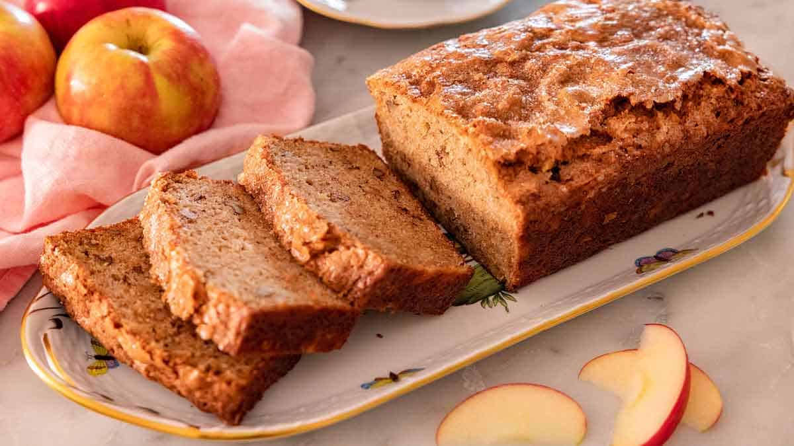

Apple Bread

Description:
I loved this recipe. It turned out exceptionally moist and wonderfully flavorful. Next time, I'll consider using 1/2 grated apple and 1/2 chopped apple just to give the bread a more interesting texture. There's a quote from Carl Sagan that says, “If you want to make an apple pie from scratch, you must first create the universe.” Fortunately, apple bread is easier. It took about an hour and fifteen minutes from start to finish. (This recipe was submitted in 2007. It was tested and photographed in April 2014.)
Ingredients:
- 3 cups all-purpose flour
- 1 teaspoon baking soda
- 1/4 teaspoon baking powder
- 1 teaspoon salt
- 1 teaspoon ground cinnamon
- 3 large eggs - beaten
- 3 cups peeled and shredded apple (about 4 apples)
- 2 cups white sugar
- 2/3 cup vegetable or canola oil
- 1 teaspoon vanilla
Steps:
- Prepare 3 standard 7x3-ish loaf pans with a thin coating of grease or cooking spray and a dusting of flour.
- Preheat oven to 325 degrees.
- In a large bowl, mix together the flour, baking powder, baking soda, salt and cinnamon.
- In a separate bowl, mix together the eggs, shredded apples, sugar, cooking oil and vanilla.
- Add wet ingredients to dry ingredients and stir until just mixed and moistened.
- The batter should be a touch lumpy. Pour evenly into prepared loaf pans.
- Bake for 45 to 55 minutes until a toothpick inserted into the center of a loaf comes out clean.
- Allow loaves to cool at least 30 minutes before slicing and serving.